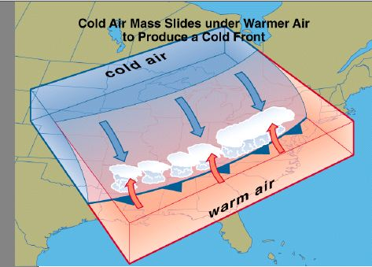
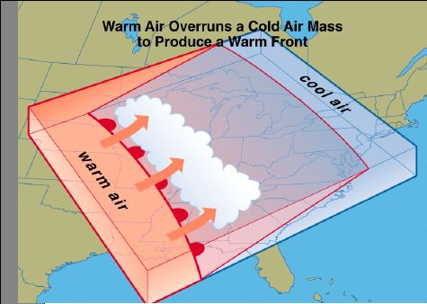
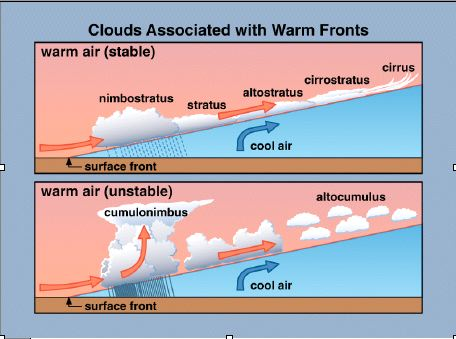
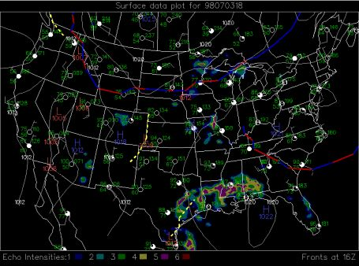

Fronts Help Page
A front is the transition zone that separates air masses of contrasting temperatures. A front is a good mechanism for storm formation and a good indication of possible rough weather. When a front approaches, air is lifted upward creating instabiltiy in the atmosphere. Fronts can change many different variables including: temperature, dewpoint, wind direction and speed, pressure, and clouds.

The cold front shown above illustrates how cold air, which is more dense than warm air, slides under the warm air which can cause lifting and storm formation.
When a warm front approaches, warm air overides the colder air to produce thunderstorms and other cloud types shown below


On the maps you will be using, the cold fronts are indicated by blue lines, while warm fronts are indicated by red lines.
Stationary fronts are fronts which show little or no movement and are indicated by wind shifts on each side of the front.
On the surface map, stationary fronts are indicated by a blue and red dotted line.
Occluded fronts are indicated by purple lines. They are fronts in which the cold front has caught up to the warm front and can be a focus for severe weather.
